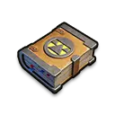

Контроль · усиление урона · стрелок третьего поколения
Грег — мифический стрелок 3 поколения, особенно сильный в Арене и PvP. Его Освоение сочетает массовый контроль и заметное усиление входящего урона по противнику, а Экспедиция даёт всей армии вероятностный прирост наносимого урона, снижение урона врага и дополнительное здоровье.
ПолучениеКороль ледяного поля, Сила государства, Ежедневные предложения
Главная рольконтроль и усиление урона в Арене и PvP
Для F2Pполезен, но в 3 поколении универсальные осколки обычно приоритетнее для Мии
Актуальностьсильный герой своего поколения, особенно в боевых режимах
Характеристики
Максимальные базовые показатели героя.
4 045Атака
3 330Защита
24 974Здоровье
290.23%Атака стрелков
290.23%Защита стрелков
Главная особенность: Грег не просто наносит урон. Он создаёт окно для всей команды: оглушает группу врагов и повышает получаемый ими урон, поэтому особенно неприятен в Арене.
Навыки Освоения
Контроль толпы, сильный одиночный эффект и дебафф на получаемый урон.
Праведный ветер
Урон по области + оглушение
Призывает клетку с неба, наносит урон врагам в области и оглушает их на 2 секунды.
160% / 176% / 192% / 208% / 224% от атаки
Заслуженное возмездие
Приговор цели
Предаёт цель суду. Наказание наносит ей большой урон, а альтернативный исход восстанавливает здоровье в размере 50% от атаки Грега.
Урон: 220% / 240% / 260% / 280% / 300%
Справедливый приговор
Дебафф на 3 секунды
Повышает урон, который получают поражённые враги, на 3 секунды.
Навыки работают на весь отряд и сочетают атаку с защитой.
Меч справедливости
Вероятностный бонус урона
Атаки всех войск получают 20% шанс повысить наносимый урон на 3 хода.
+8% / +16% / +24% / +32% / +40%
Средство сдерживания
Ослабление противника
Атаки всех войск получают 20% шанс снизить наносимый всеми вражескими войсками урон на 2 хода.
−10% / −20% / −30% / −40% / −50%
Закон и порядок
Постоянное здоровье армии
Повышает здоровье всех войск.
+5% / +10% / +15% / +20% / +25%
Для Свирепого медведя: реально атакующим является прежде всего «Меч справедливости». Он полезен, но срабатывает с шансом 20%, поэтому как первый герой участника Грег обычно уступает стабильным бонусам Джесси, Джассера и Джеронимо.
Эксклюзивное снаряжение

Указ государства
Эксклюзивное снаряжение усиливает контроль Грега и здоровье рейда.
+764Атака
+630Защита
+4 725Здоровье
+70%Смертоносность
+70%Здоровье войск
Судебное предписаниеНа максимальном уровне заглушает цели на 5 секунд, не давая им использовать навыки, и наносит 300% урона от атаки.
Рог справедливостиНа максимальном уровне повышает здоровье войск рейда на +15%.
Приоритет прокачки
Освоение / Арена
1Праведный ветермассовый урон и 2 секунды оглушения
2Справедливый приговорусиливает урон всей команды по цели
3Заслуженное возмездиесильный одиночный эффект
Экспедиция / PvP
1Меч справедливостиглавный атакующий навык Грега
2Закон и порядокстабильное здоровье всей армии
3Средство сдерживаниясильный защитный эффект, но срабатывает вероятностно
Где использовать Грега
🏟️ Арена
Один из лучших режимов для Грега. Массовое оглушение на 2 секунды и +30% получаемого врагами урона помогают быстро переламывать бой.
⚔️ PvP
Хороший стрелок 3 поколения. Даёт и атакующие, и защитные эффекты всему отряду.
🧭 Освоение
Сильный контроль и усиление входящего урона делают его полезным против плотных групп врагов.
🐻 Свирепый медведь
Как лидер рейда может использоваться по силе героя, но участником с первым навыком он скорее запасной вариант из-за 20% шанса срабатывания.
Плюсы и минусы
Плюсы
сильное массовое оглушение в Арене;
до +30% получаемого врагами урона;
до +40% наносимого урона всем войскам при срабатывании;
до +25% здоровья всех войск;
может снижать урон всей армии противника до 50%;
эксклюзивное снаряжение усиливает контроль и здоровье рейда.
Минусы
главные экспедиционные эффекты частично зависят от шанса;
для F2P в 3 поколении Миа обычно приоритетнее;
на Медведе уступает героям со стабильными гарантированными бонусами участника;
по мере выхода новых поколений постепенно теряет место в основном PvP-составе.
Итог
Сильный выбор для Арены и PvP
Грег особенно хорош там, где важны контроль и быстрое уничтожение цели. Его массовое оглушение и «Справедливый приговор» делают его заметным усилением состава 3 поколения. Для игрока без покупок разумно сначала закрыть приоритет по Мии, а затем уже вкладывать универсальные мифические осколки в Грега.